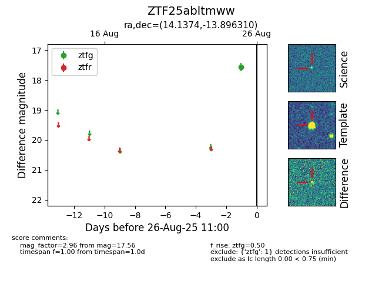

FINK: ZTF25abltmww
Lasair: ZTF25abltmww
ALeRCE: ZTF25abltmww
ZTF25abltmww (ztf,fink)
equatorial (ra, dec) = (14.1374,-13.89631)
galactic (l, b) = (128.3377,-76.71437)

last ztfg=17.56
1 ztfg detections